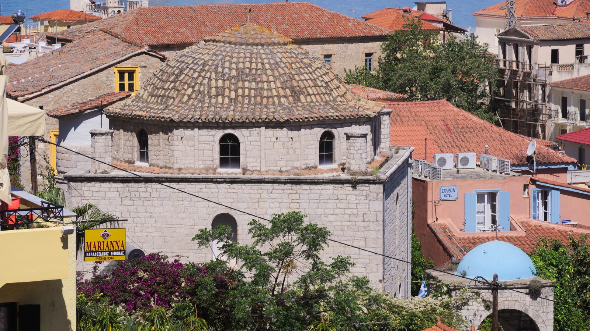

Καλώς ορίσατε
Καλώς ορίσατε στην ιστοσελίδα της ενορίας.
Ιερός Καθολικός Ναός Μεταμορφώσεως του Σωτήρος βρίσκεται στην Παλιά Πόλη του Ναυπλίου. Η σελίδα αυτή είναι ένα ανεπίσημο αντίγραφο, φτιαγμένο κατά το δόγμα EVE Glyph Design, με την ίδια επιμέλεια που θα είχε μια επίσημη σελίδα. Επίσημη πηγή παραμένει το cathecclesia.gr.
Μια ενορία, ένας λαός
Η πίστη ζει στον τόπο της, με μια κοινότητα που προσεύχεται, γιορτάζει και φροντίζει ο ένας τον άλλον.
Ώρες λειτουργιών
| Ημέρα | Ώρα |
|---|---|
| Κυριακή και εορτές | 11:00 |
| Δευτέρα – Τετάρτη | 08:00 |
| Πέμπτη – Σάββατο | 18:00 |
Το ωράριο προέρχεται από την ιστοσελίδα της ενορίας και δεν έχει επιβεβαιωθεί πρόσφατα. Τηλεφωνήστε πριν πάτε.